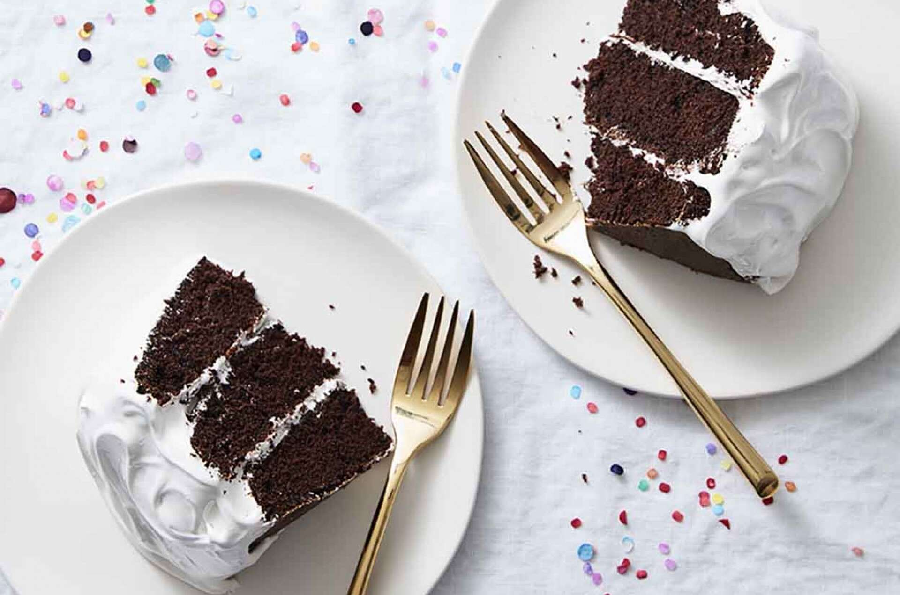

Chocolate Cake

Description
This chocolate cake uses butter for flavor and a bit of oil for a never-fail moist crumb, ideal for celebrations. With more of a milk chocolate, rather than dark chocolate flavor, it's perfect for kids.
Ingredients
- 2 1/4 cups (270g) King Arthur Unbleached All-Purpose Flour
- 1 1/2 teaspoons baking powder
- 1/2 teaspoon baking soda
- 3/4 teaspoon salt
- 3/4 cup (64g) unsweetened cocoa, Dutch-process or natural
- 1 3/4 cups (354g) granulated sugar
- 8 tablespoons (113g) unsalted butter, at room temperature
- 1/3 cup (64g) vegetable oil
- 2 teaspoons vanilla extract
- 1 cup (227g) milk
- 1/2 cup (113g) brewed coffee or water
- 4 large eggs
Steps
- Preheat the oven to 350°F. Lightly grease and flour your choice of pans: one 9" x 13" pan, two 9" round pans, or three 8" round pans.
- Sift together the flour, baking powder, baking soda, salt, cocoa, and sugar into a large mixing bowl.
- Add the butter and mix at low speed for 1 minute. With the mixer running, add the oil and continue mixing until the mixture looks sandy, about 30 seconds more.
- In a large measuring cup, combine the vanilla with the milk and coffee(or water), and add all at once to the dry ingredients. Mix for 1 minute at low speed, stop and scrape the sides and bottom of the bowl, then mix for 30 seconds more.
- Add the eggs one at a time, beating well at medium-high speed between additions.
- Scrape the sides and bottom of the mixing bowl, and mix for 30 seconds more. The batter will be thin.
- Transfer the batter to the prepared pan(s) of your choice. Smooth out the tops of the layers with an offset spatula.
- Bake for 34 minutes for a 9" x 13" pan, 28 to 30 minutes for 9" layers, and 24 to 26 minutes for 8" layers.
- The cake is done when the top springs back when very lightly touched in the center, and the edges just begin to pull away from the edge of the pan. A cake tester inserted in the center will come out clean.
- Remove the cake from the oven and let cool completely in the pan(s) on a rack before turning out of the pans to frost.
- Cake layers can be wrapped and frozen for up to a month before frosting.